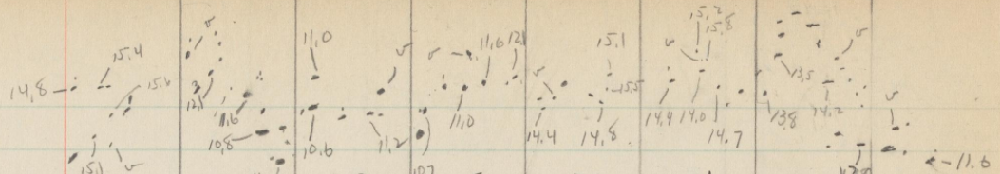
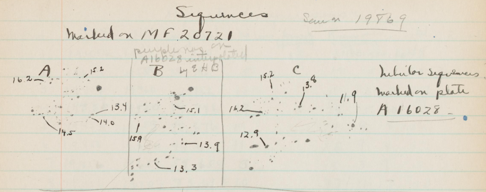

What is the purpose of this project?
Before the time of what we would now think of upon hearing the word “computer,” this was a title given to those whose job it was to perform calculations. In the late nineteenth century, the Harvard College Observatory began employing women as “computers” to carefully study and compare their collection of glass plate photographs of the night sky. [1] The Star Notes project is part of an initiative by Harvard’s Wolbach Library called Project PHaEDRA—Preserving Harvard’s Early Data and Research in Astronomy. Detailed observations about the plates were recorded by the Women Computers in over 2,500 logbooks, and those logbooks have now been scanned in as digital images. The citizen science project is an effort to link those handwritten observations to the archive of over 500,000 plates. This will greatly enhance the accessibility of the photographs, which constitutes a century of astronomical observations. [2]
1 “Women Computers.” Astronomical Photographic Plate Collection, Harvard College Observatory - Plate Stacks, platestacks.cfa.harvard.edu/women-computers.
2 “Project PHaEDRA.” John G. Wolbach Library, library.cfa.harvard.edu/project-phaedra.
Task
The task for participants of this citizen science project is simple: locate the references to the photographic plates on the pages of the logbooks and transcribe them in connection with the digital pages. Sometimes it’s as easy as scanning a page for where one of the astronomers has written a label of “Plate ####,” but other times the plate numbers are incomplete, not labeled or otherwise obscured. Due to this and the complexity of the varied styles of handwriting, people are better suited for this task than (machine) computers.
Typically, the plate number consists of one or two letters, followed by a series of four to five numbers. Since the numbers are sequential, it isn’t uncommon for long lists of plate numbers to simplify down to just the changed digit (e.g. the list begins with MC1000 and the next line is labeled simply “1” to represent plate MC1001, “2” for plate MC1002 and so on). When making classifications, you’re encouraged to infer and enter the full plate number in that manner if you’re able to, and if you’re not there’s a discussion forum where you can ask for help from others.
Each time you’re presented with a new page, you’re asked to click “yes” or “no” for whether the page contains plate numbers. Afterward, you use your cursor to draw a box around each of the plate numbers and submit, then move on to the next page and start again.
I’ve included an animated image that I created of one of my classifications below:

Reflection
Initially, I chose to work on this project simply because of the fact that it’s furthering work that was performed solely by women. I was excited to see this representation among the available projects and wasn’t disappointed as I did more research along the way. As a woman currently working in a field dominated by men, it was encouraging to see that such an important task was left in the hands of female astronomers, whether at the time it was viewed that way or not.
The task wasn’t very difficult, but there were certainly times that deciphering the handwriting in the logbooks was a bit challenging. Much of the writing appeared to have been done with pencil and has become somewhat faint by this time. I was honestly fascinated by the differences in handwriting, though, and my favorite part was finding pages dated further and further in the past. The earliest date I came across was April 29, 1890:
My favorite things to find in the logbooks, however, were the little illustrations of stars like the ones below:


Participation
While my 200 classifications don’t seem like much when compared to the 14,316 currently listed on the project’s website (Star Notes), I’m glad to have been able to make at least a small contribution to the effort to make the data more accessible. The existence of citizen science projects enables research to be undertaken that might not be without them. According to the Zooniverse website, “the major challenge of 21st century research is dealing with the flood of information we can now collect about the world around us.” With the help of everyday people in their own homes and on their own time, these research projects are completed more quickly than they would be without this involvement, and the fact that any given piece of data is analyzed by multiple people means that the researchers can rely on the “wisdom of crowds” for accuracy. [1]
1 “Zooniverse.” Zooniverse.org, www.zooniverse.org/about.

 Icons by
Icons by